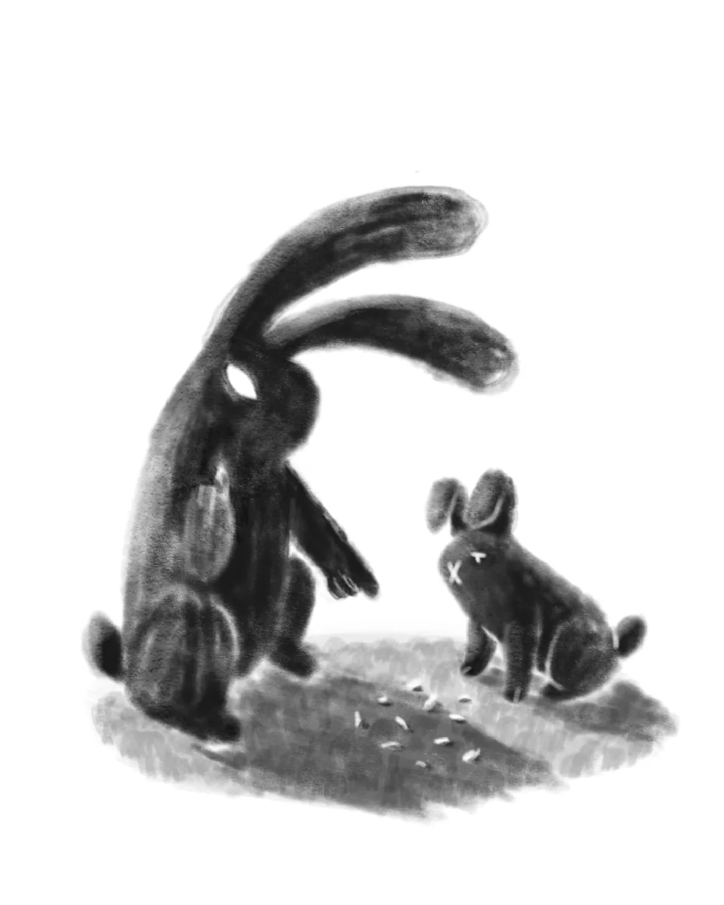
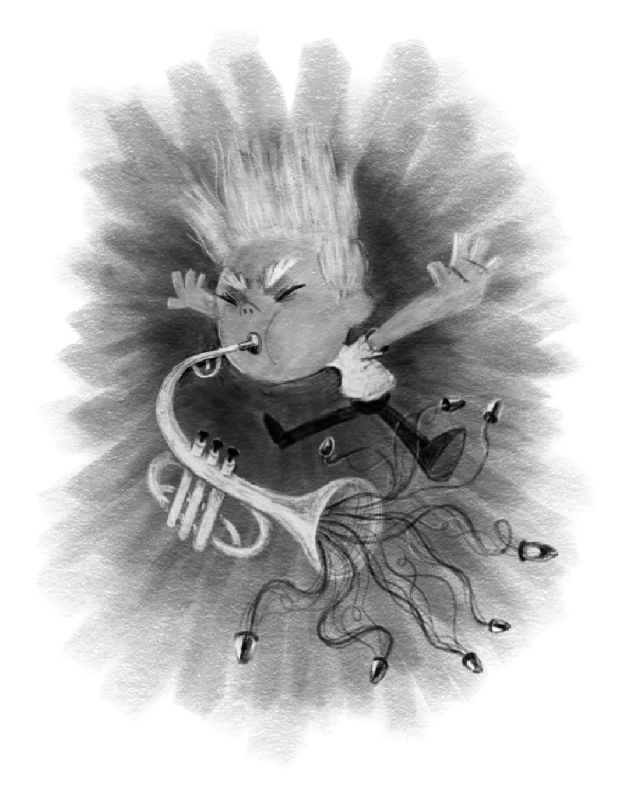
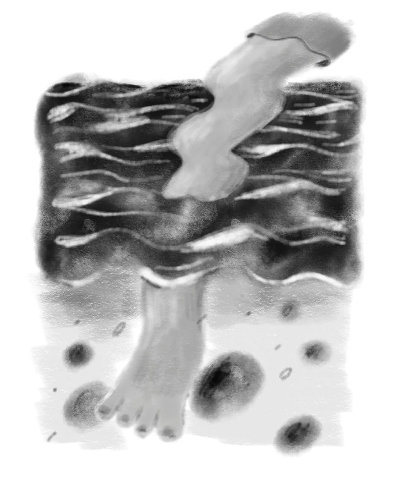
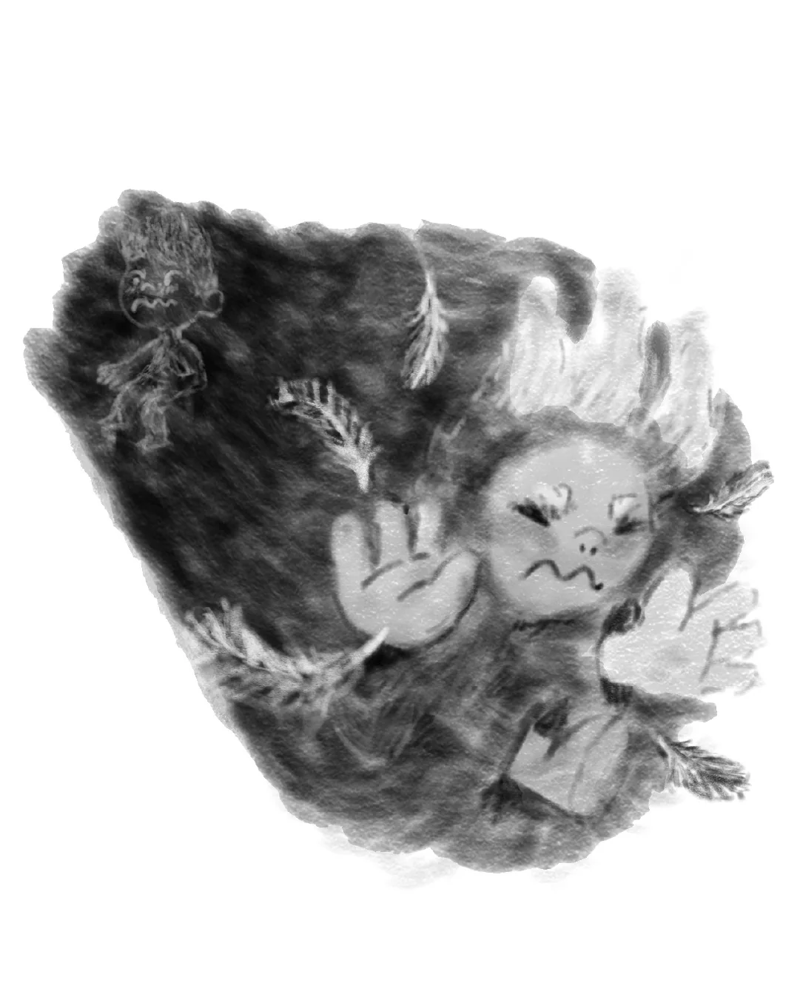

Pelos de zanahoria
Ilustraciones inspiradas en el libro clásico de Jules RenardIllustrations inspired by Jules Renard's classic book
Serie de ilustraciones en blanco y negro presentadas en una convocatoria distrital sobre un clásico de la literatura infantil.
A series of black and white illustrations submitted to a Bogotá open call on a classic of children's literature.




